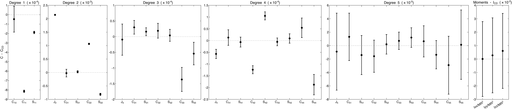
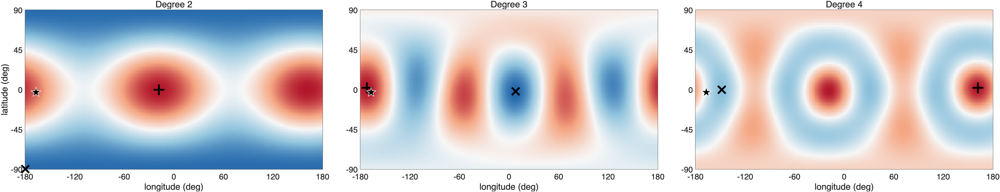
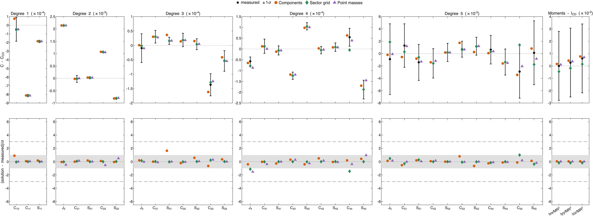
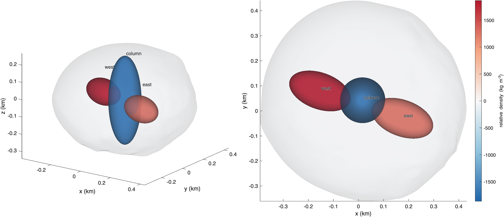
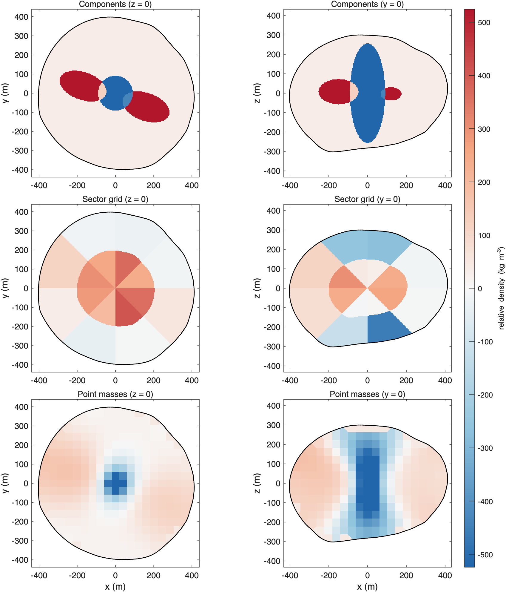
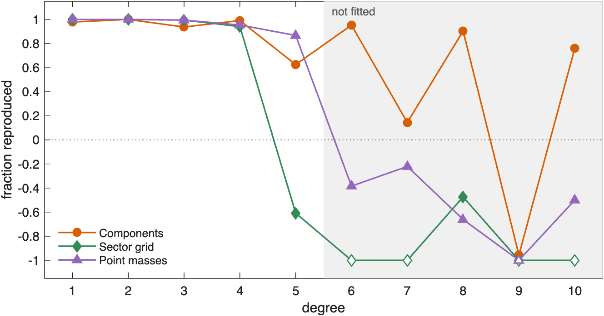

ROB-DATA1: Didymos#
Last edited October 29, 2026
Degree 2 of ROB-DATA1 moves mass from the spin axis toward the two ends of one equatorial axis, and degree 1 says that one end carries more than the other. A model of three components built on that reading, a light column along the spin axis and a dense ellipsoid at each end of the axis, fits every measured coefficient with 9 parameters and ranks first by 37 in AIC. The point masses, given no shapes, find the same light column. Above the fitted degrees, 1 to 5, the model with components reproduces 92% of ROB's exact values over degrees 6 to 10, where the point masses and the sector grid do worse than constant density.
| Kind | Model | Parameters | Reduced χ² | p | AIC | Exact values, degrees 1–5 | Exact values, degrees 6–10 |
|---|---|---|---|---|---|---|---|
| Components | light column along the spin axis, two equatorial ellipsoids | 9.0 | 0.24 | 1.00 | 25.0 | 1.00 | 0.92 |
| Sector grid | 2 × 4 × 8 | 28.3 | 0.52 | 0.87 | 61.7 | 1.00 | −3.82 |
| Point masses | 2667 points | 28.7 | 0.51 | 0.88 | 62.1 | 1.00 | −0.40 |
The best solution of each kind, by AIC (bold: the lowest). Parameters: the effective number of parameters. Exact values: the fraction of ROB's exact coefficients a solution reproduces, over the fitted degrees 1–5 and over degrees 6–10, which were not (1: all; 0: no better than constant density; negative: worse). See How to read these pages.
1. What the measurements show#

| Measurement | C − C_CD | 1σ | In σ | What it says |
|---|---|---|---|---|
| −66 | center of mass toward −x | |||
| −14 | center of mass toward −y | |||
| −246 | higher: mass toward the equator | |||
| +40 | mass toward ±x more than ±y | |||
| −21 | mass toward longitudes −45° and 135° | |||
| −4 | order 3, strongest at longitudes −173°, −53°, 67° | |||
| −7 | order 2, strongest at longitudes −110°, 70° | |||
| +6 | order 2, strongest at longitudes −110°, 70° | |||
| −4 | order 4, strongest at longitudes −108°, −18°, 72°, 162° |
The measurements more than 3σ from constant density.
Three things stand out. is 246σ higher than at constant density: mass has moved from the spin axis toward the equator. and say the move is not even around the equator but toward one axis. And the center of mass is 0.59 m from the center of figure toward −x: one end of that axis is heavier. Degrees 3 and 4 are small but measured. Degree 5 is fitted, but no coefficient of it is more than 1σ from constant density. The moments of inertia are not: for Didymos their 1σ is larger than any interior changes them.
2. Where the mass is#

Degree 2 puts the excess on the equator at longitudes −19° and 161° (±2°) and the deficit at both poles. The center of mass points to longitude −167°, 12° from the 161° end. Degree 3 has its strongest excess at −172° and degree 4 at −18° and 162°: the same axis, the same heavier end.
So the model built for this package takes mass from along the spin axis with a light column, a prolate ellipsoid about the axis through the center of figure (semi-axes 0.25, 0.25 and 0.70 of the mean radius), and puts it at the two ends of the axis with a dense ellipsoid at each, started 0.6 of the mean radius out at longitudes −20° and 160° and elongated along the axis. The densities of all three and the centers of the two ellipsoids are fitted.
3. How well each solution fits#

The model with components, the sector grid and the point masses all match every fitted coefficient within 2σ. They differ in what it costs: 9 parameters for the components, about 28 effective parameters for the others. The components rank first by 37 in AIC, a strong preference. The model of five components tried before it, light polar caps, a dense sphere at each end of the axis and a light core, fits with 14 parameters and ranks 23 behind.
4. The model with components#

| Component | Shape and place | Relative density (kg/m³) | Density (kg/m³) | Mass anomaly (kg); makes most of |
|---|---|---|---|---|
| column | ellipsoid, semi-axes 91 × 91 × 256 m, at the center | −1776 ± 49 | 861 | ; −239σ, −6σ |
| east | ellipsoid, semi-axes 128 × 73 × 73 m, 175 m from the center toward lat −1°, lon −24° | +1305 ± 145 | 3942 | ; +127σ, −54σ |
| west | ellipsoid, semi-axes 128 × 73 × 73 m, 174 m from the center toward lat 3°, lon 168° | +1863 ± 163 | 4500 | ; −193σ, +40σ |
Background density 2637 kg/m³ (bulk density 2603 kg/m³). Makes most of: the component's part of each coefficient in units of its 1σ.
Each component does what the reading asked of it:
- The light column (−1776 ± 49 kg/m³, semi-axes 91, 91 and 256 m, at the center) makes nearly all of : 239σ of . Its density, 861 kg/m³, is a third of the bulk density.
- The west and east ellipsoids (+1863 and +1305 kg/m³, 174 and 175 m from the center at longitudes 168° and −24°) make most of and . Being unequal, they move the center of mass toward −x: their parts of , −193σ and +127σ, leave the measured −66σ. The west ellipsoid is at the density bound of 4500 kg/m³: the excess at the 161° end is more than an ellipsoid of this size can hold.
- The background, 2637 kg/m³, is 34 kg/m³ above the bulk density, to make up the mass the column takes away.
5. Point masses and components side by side#

| Solution | Mass moved (% of M) | Excess centered at (m) | Deficit centered at (m) |
|---|---|---|---|
| Components | 2.6 | (−21, −4, 2) | (1, 0, 0) |
| Sector grid | 1.7 | (−21, −5, 1) | (10, 4, 1) |
| Point masses | 1.5 | (−34, −5, 0) | (4, 4, 2) |
| Correlation | Components | Sector grid | Point masses |
|---|---|---|---|
| Components | 1.00 | 0.11 | 0.68 |
| Sector grid | 0.11 | 1.00 | 0.26 |
| Point masses | 0.68 | 0.26 | 1.00 |
Mass moved: the mass above the bulk density, as a percentage of the mass of the body. Excess and deficit centers are from the center of figure. Correlation: of the relative densities of the solutions, 41 m cell by 41 m cell.
The point masses were given no shapes, yet they find the light column. On the y = 0 plane they draw a light band about 100 m wide along the spin axis, from 250 m below the center to 250 m above it, where the column is; on the z = 0 plane it is a light region about 100 m across at the center. Both solutions add the mass at the equator, more on the −x side: the excess of the components is centered 21 m toward −x, that of the point masses 34 m. The difference is how compact the dense material is. The components gather it into two ellipsoids; the point masses spread it over the outer equator. Their relative densities correlate 0.68 cell by cell, more than any two kinds of solution on the other Didymos packages.
The sector grid cannot make a column: its sectors are blocks of latitude and longitude. It puts light caps at the poles of its outer shell and a denser inner shell instead, and correlates 0.11 with the components and 0.26 with the point masses.
6. Against ROB's exact values#

All three reproduce 94 to 100% of each of degrees 1 to 4. Degree 5 is fitted, but its 1σ is larger than its anomaly, so the fit does not hold it: the point masses reproduce 87% of it, the components 62%, and the sector grid does worse than constant density. Above degree 5, which no solution was fitted to, the model with components reproduces 92% over degrees 6 to 10: 95% of degree 6, 90% of degree 8 and 76% of degree 10, though only 14% of degree 7, and it fails at degree 9. The point masses (−0.40) and the sector grid (−3.82) do worse than constant density at every degree above 5. A light column along the spin axis with dense material at the two ends of one equatorial axis is close to what the hidden interior has.